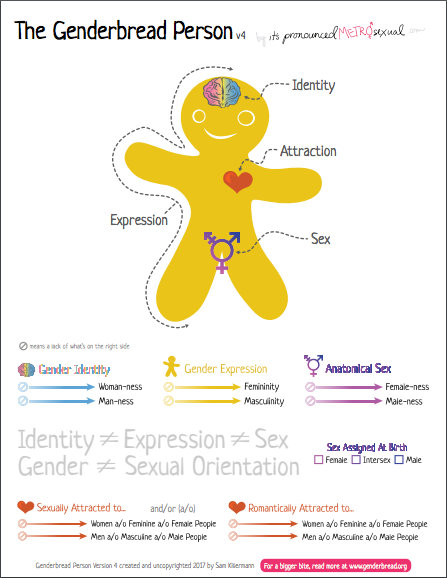

The Rainbow Spectrum
An important concept when learning about gender and sexuality--and all things in the LGBTQIA+ community--is that everything lies on a spectrum. Take the genderbread man below (courtesy of It's Pronounced Metrosexual) The brain determines one's gender identity, the heart determines one's attraction, the sex parts obviously determine one's anatomical sex, and the person as a whole determines one's expression.
In other terms, that means that a person chooses how they want to express themselves based upon the sexual, romantic, and/or platonic attractions that makes their heart go boom-boom, and the gender identity that fits with how their brain perceives themselves. As for biological sex, that's not necessarily as important since it is determined by chromosomes rather than identity, and the focus with the LGBTQIA+ community is identity regardless of biological sex.
Back to the spectrum bit! Below the genderbread man are five spectrum sections for gender identity, gender expression, anatomical sex, sexual attraction, and romantic attraction. For gender identity, there's a spectrum for 'female-ness' and a spectrum for 'male-ness' with the other ends of the spectrum being people with a lack of what the spectrum is for. This helps to account for individuals who do not fall on the standard gender binary, but who have a place on the gender identity spectrum wherever they'd like (even if it's not on the spectrum at all).
So what's the difference between binary and spectrum? Well, a binary is strictly black and white (male and female), whereas a spectrum is technicolor and almost organic. This means that while non-binary individuals do not fit the black and white (and outdated) binary, there's room for them on the spectrum should they choose it. It's an important distinction when considering the differences between gender and sexuality.